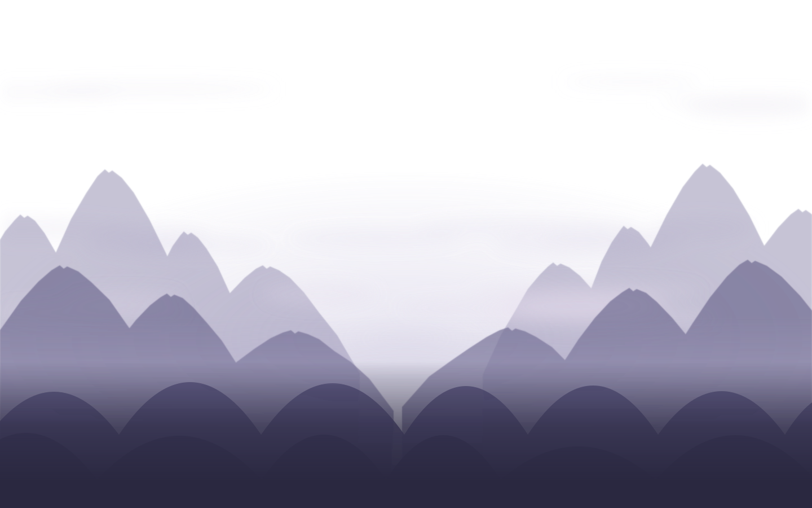
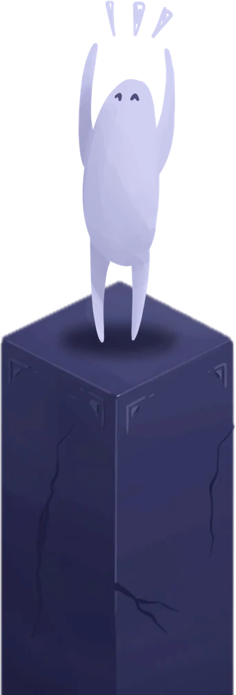
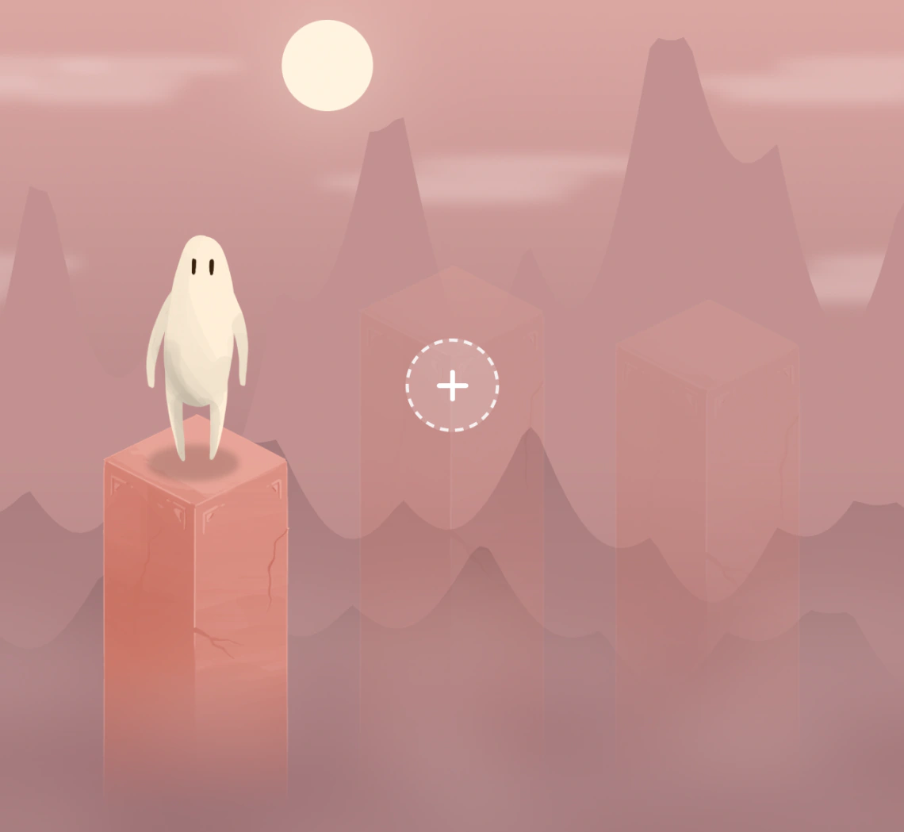
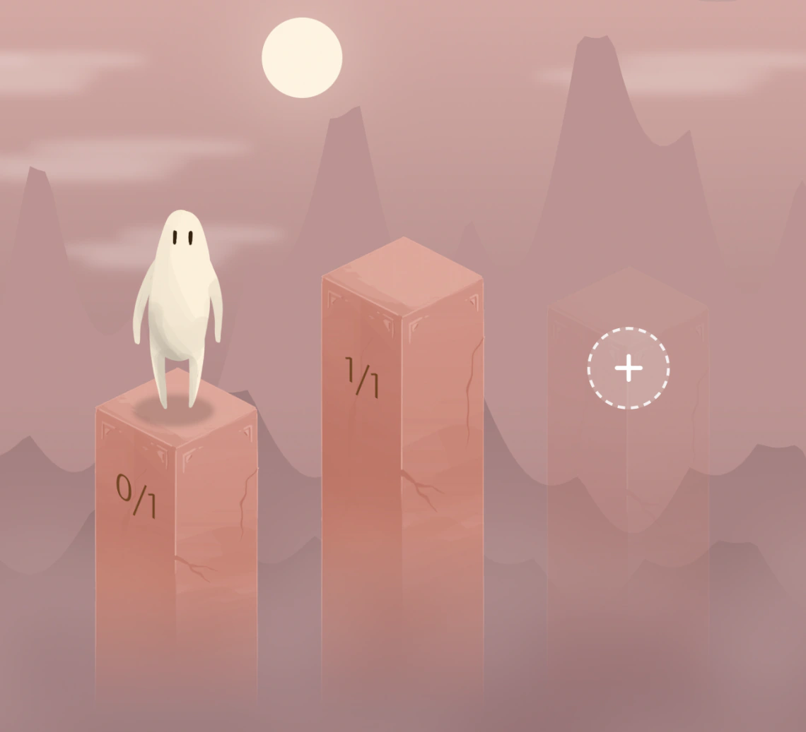
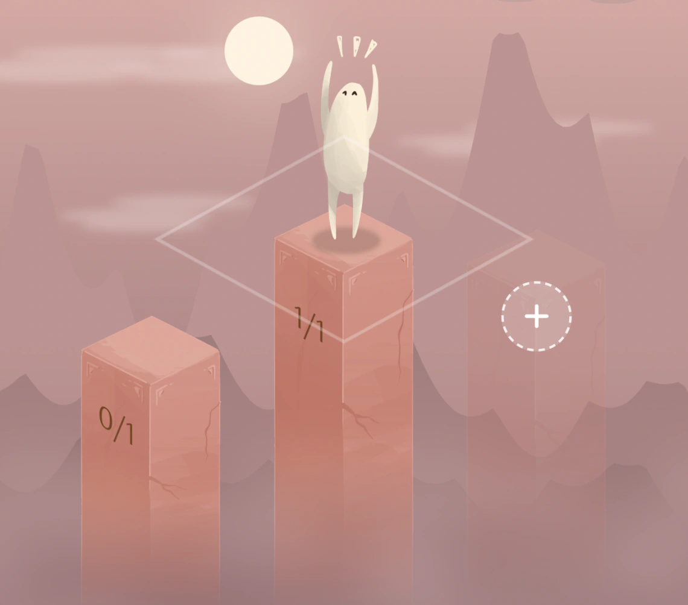

Anna Yao
Co-Founder & Product Designer

Meet Skope, the app that turns your goals into a journey.

Make a goal. We'll take care of the specifics for you.



Co-Founder & Product Designer
Co-Founder & Software Engineer
We saw how easy it is to set a goal, and how hard it can be to follow through. We founded Skope to change how people can approach productivity and goal setting: turning the journey of progress into a fun, gamified app. By combining a character's daily steps with accountability and something at stake, we're building a way to help people turn their intentions into action, one goal at a time.
If you miss your goal, your stake goes to charity. The money you choose to commit gives your goal a real consequence.
A picture or screenshot can show you've completed your goal. Choose a goal with a clear, visible result so you know what to submit before you start.
Start with a specific goal you can achieve within your day: study for an hour, read 20 pages, finish a project task, or go for a run. Small, clear goals make it easier to see your progress.
Skope is currently in development. We're working on bringing this journey to life; the app isn't available to download yet.